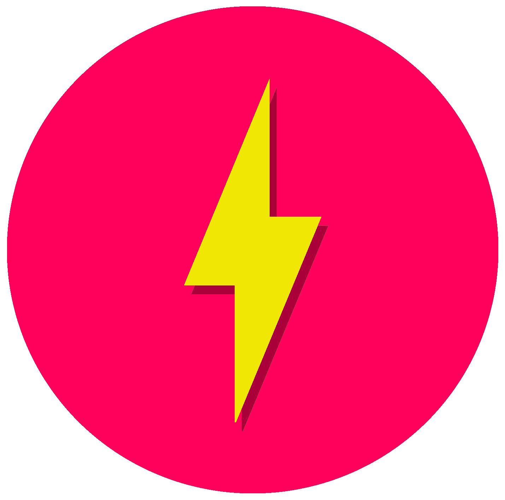

Cledson Ferreira
Servidor público e desenvolvedor do EmuBateria


 EmuBateria
O EmuBateria é um aplicativo que eu desenvolvi para solucionar um problema de desligamento inesperado que váries utilizadores de dispositivos Android portáteis enfrentam após pelo menos um ano de uso desde a aquisição de seu aparelho.
A grande novidade do EmuBateria encontra-se em seu emulador de controlador de carga da bateria, que tem como principal tarefa calibrar e contabilizar a carga da bateria uma vez habilitada.

O EmuBateria é suportado em uma gama de aparelhos Android populares, como os smartphones/tablets das marcas Samsung e Xiaomi. Com exceção de todos os aparelhos que possuem nenhuma ou mais de uma célula de lítio em série.
Por ser parte do meu maior projeto nesses últimos anos, dos estudos que fiz sozinho para entender a origem e uma solução para o problema, decidi fazer diferente desta vez e publicar apenas o aplicativo em sua forma final, especialmente porque não ganhei nenhum centavo com o desenvolvimento desse projeto desde que comecei a discutir em redes sociais com outros programadores e usuários avançados em busca da raiz do problema. Sendo assim, entendo como necessária a não liberação do código até que eu finalmente possa ser recompensado por todo esse trabalho.
Pois o conhecimento é hoje a única e maior riqueza que um cidadão pobre pode ter no capitalismo.
Por hora, em razão das minhas dificuldades financeiras para a criação da conta de desenvolvedor na Google Play, estou publicando as atualizações do aplicativo em um canal de Telegram homônimo. Em breve ele estará disponível para download através da principal loja do sistema Android.
O aplicativo é distribuído gratuitamente tanto porque eu não tenho condições de publicar, quanto porque sei que a disseminação gratuita deve auxiliar na popularização do projeto.

P.S.: suas eventuais críticas quanto à usabilidade à parte, você tem que admitir que o meu design 100% original é muito foda u.u
por ledso
Atribuição de autoria
[X]- Ícones do Linkedin, Instagram e do Telegram feitos por Freepik de www.flaticon.com.